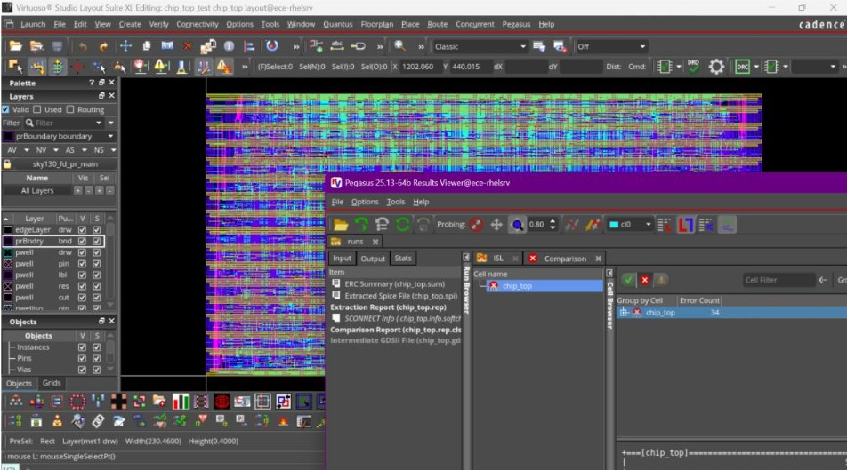
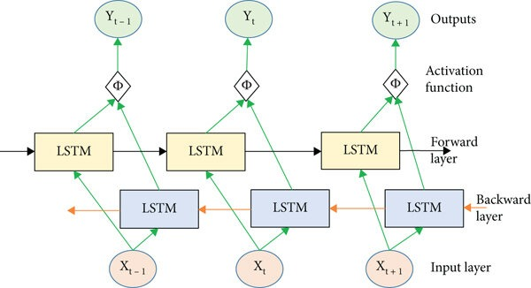
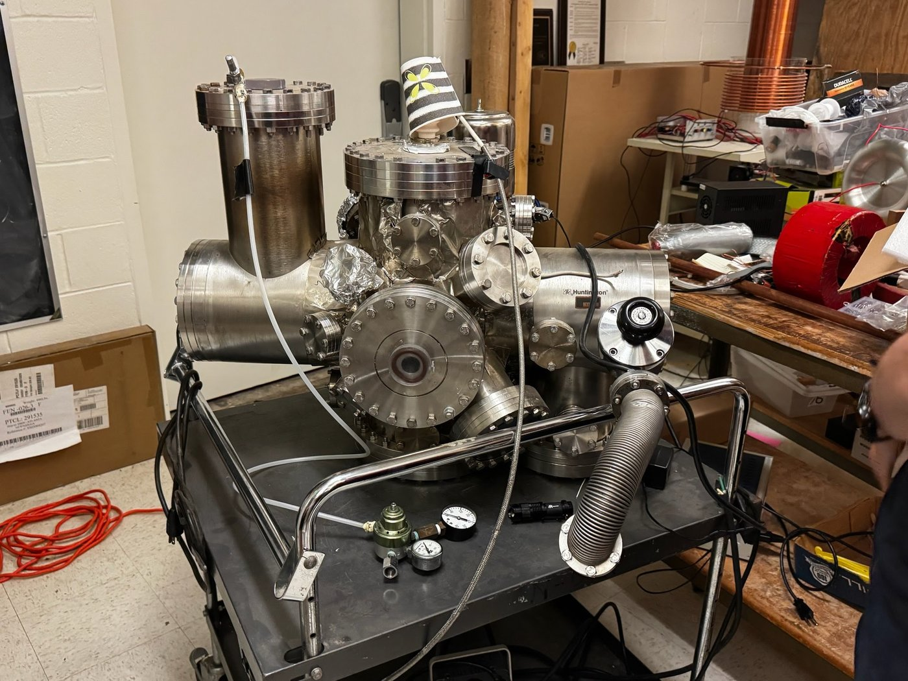

Projects
RISC-V Processor
The Problem
I wanted to understand processors from the inside, not just as a black box that runs my code. Through Georgia Tech Silicon Jackets, I set out to implement core pieces of a RISC-V CPU as an individual project.
The Process
Working in SystemVerilog, I translated the RISC-V Instruction Set Architecture specification into a fully-functional CPU RTL. After writing the logic for my CPU core, I built a constrained-random verification pipeline that generates large numbers of legal instruction sequences and checks the design's behavior against expected results. Finally, I completed a SiliconJackets-guided physical design workflow to finalize a physical layout for my chip.
The Outcome
The core executes basic instruction functionality correctly as verified by a complete test bench. I am continuing to expand my cpu core to cover more of the RISC-V instruction set.


TurboSentry Jet Engine Monitoring
The Problem
Jet engines degrade in nonlinear ways that are hard to spot until it's too late. Predicting remaining useful life from sensor data lets maintenance happen before failure occurs without the waste created by ultra-conservative replacement timelines.
The Process
Using NASA's sample turbofan engine telemetry, I built an ingestion pipeline that serializes raw multivariate sensor streams over multithreaded TCP sockets, simulating live data. I then trained a deep bidirectional LSTM in PyTorch on the GPU to learn degradation patterns across many engines.
The Outcome
The model predicts failure with an average error of under one operational cycle according to NASA's industry-validated tests, well within the project constraints.
Plasma Jackets Fusor
The Problem
A Farnsworth–Hirsch fusor uses an extremely high-voltage electric field to confine plasma and drive fusion reactions. Getting there safely is mostly constrained by electrical systems. The power system has to deliver 20+ kV and 15+ mA reliably without endangering nearby individuals.
The Process
With Georgia Tech's Plasma Jackets, I help lead development of the fusor's electronics and power delivery architecture. I designed the power delivery system around the high-voltage requirements of plasma generation, with a MOT-based architecture using a Cockcroft-Walton Multiplier to achieve target stats.
The Outcome
The result is a robust power delivery system that supports stable plasma confinement and reliable fusor operation.
